Este diário contém informações das viagens e vivências realizadas pelo Fagner Dantas, nele é exibido lugares que o mesmo frequentou e contando com a apresentação.
Natal é a capital do estado de Rio Grande do Norte, na extremidade nordeste do Brasil. É conhecida pelas extensas dunas de areia costeiras e pelo Forte dos Reis Magos, em forma de estrela, uma fortaleza portuguesa do século XVI na foz do rio Potengi. A norte do rio, Genipabu é uma área de enormes dunas com uma lagoa de água doce. A autoestrada Via Costeira liga uma faixa de 15 km de praias a sul do forte.
O Morro do Careca é uma das dunas mais conhecidas de Natal, com uma beleza natural deslumbrante. O nome "Careca" faz referência à sua aparência, pois o topo da duna é frequentemente desnudado do vegetação, criando um contraste com as áreas ao redor, que são cobertas por árvores e arbustos. De seu topo, é possível ter uma vista panorâmica incrível da Praia de Ponta Negra, do mar azul-turquesa e da cidade de Natal ao fundo.
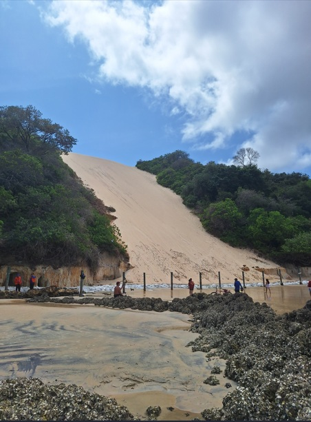Um dos destinos acerca de 100km da capital potiguar, encontrasse a cidade de São Miguel do Gostoso, conhecida por ser uma vila de pescadores com belezas deslumbrantes, estivemos por lá e conhecemos tamanha riqueza potiguar.
A Praia do Tourinho é uma das mais bonitas de São Miguel do Gostoso, com seu mar calmo e transparente, perfeito para um banho relaxante. Com uma faixa de areia extensa e cercada por dunas e vegetação nativa, a praia tem um ambiente selvagem e intocado, que a torna um lugar especial para quem quer desfrutar de um pedaço do paraíso quase intocado. Suas águas são ideais para a prática de esportes aquáticos como stand-up paddle, caiaque e kitesurf, sendo um local propício para quem busca um pouco de aventura em meio à tranquilidade.
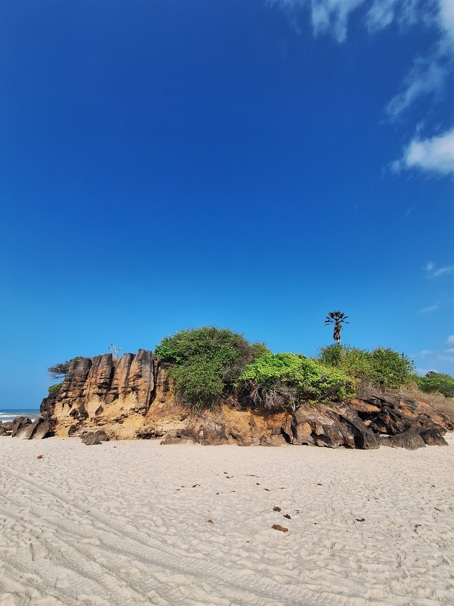A Praia de Cotovelo é uma charmosa e tranquila praia localizada no município de Parnamirim, no Rio Grande do Norte, a aproximadamente 20 km de Natal, a capital do estado. Conhecida por sua beleza natural e atmosfera calma, Cotovelo é um destino perfeito para quem busca fugir do movimento das praias mais turísticas e desfrutar de um ambiente mais sossegado, com águas claras e uma paisagem exuberante.
A Praia de Cotovelo é marcada por suas águas calmas e areias douradas, ideais para banhos relaxantes e atividades como stand-up paddle, caiaque e passeios de barco. A praia tem um visual encantador, com dunas e coqueiros, criando um ambiente tropical perfeito para momentos de descanso.
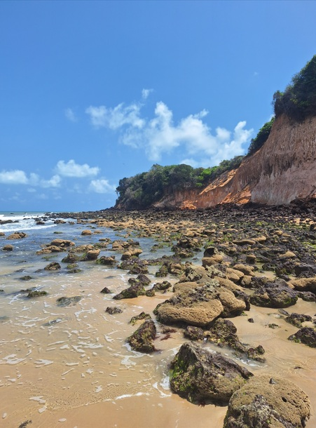O mar da Praia de Cotovelo é tranquilo, com poucas ondas, o que torna o local uma ótima opção para famílias com crianças e para quem deseja relaxar longe do agito. Além disso, a vista do local para o oceano e o horizonte é deslumbrante, proporcionando um cenário perfeito para apreciar o pôr do sol.
João Pessoa ou “Jampa”, como é chamada por seus moradores, é uma cidade que combina tranquilidade e beleza. Quem viaja à capital paraibana logo percebe seu ritmo desacelerado, que permite desfrutar de pequenos prazeres, como caminhar na areia e, sem esforços, mergulhar em um mar de tons esverdeados. A orla da cidade, com edifícios baixos e toda a proximidade da praia que um visitante merece, é um convite para relaxar.
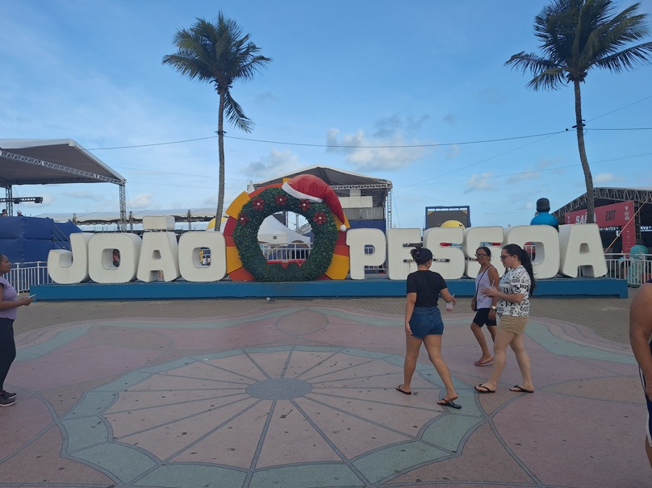Na orla é possível encontrar pontos de aluguel de bicicleta ao qual você pode as utilizar para aproveitar as paisagens da Orla de Cabo Branco e Manaira.
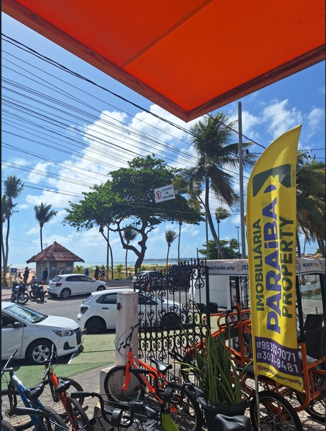 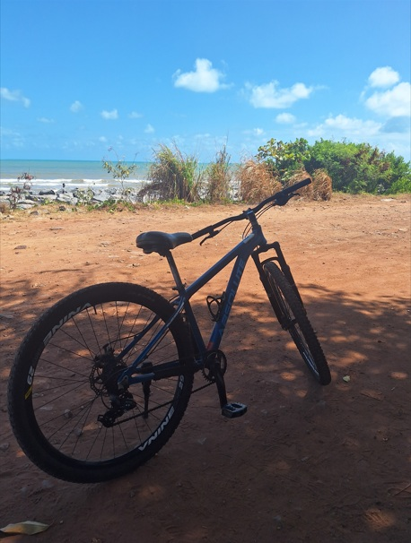Após alugarmos as bikes, decidimos ir até o imponente Farol de Cabo Branco, percorrendo uma distância de uns 11km e aproveitando a natureza.
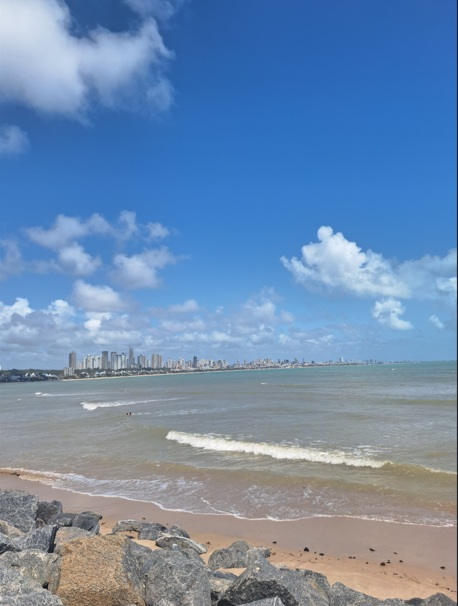O Farol de Cabo Branco é um dos pontos turísticos mais icônicos de João Pessoa, na Paraíba. Localizado no extremo leste da cidade, no Cabo Branco, o farol é uma importante referência histórica e geográfica, além de oferecer uma vista deslumbrante do oceano Atlântico e da costa paraibana.
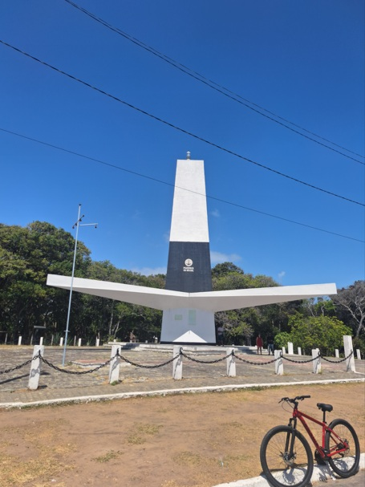O farol oferece uma vista panorâmica incrível da praia do Cabo Branco, das falésias e da vegetação nativa da região. O local é ideal para quem deseja apreciar a natureza, tirar fotos incríveis e se conectar com o ambiente tranquilo. Além disso, o espaço ao redor do farol é rodeado por áreas de lazer e a Estação Cabo Branco - Ciência, Cultura e Artes, que também é uma atração cultural importante.
Ainda na região metropolitana aproveitamos o fim da tarde e seguimos até a cidade de Cabedelo/PB, para conhecermos a Praia do Jacaré.
A Praia do Jacaré oferece um ambiente tranquilo, com águas calmas e mornas, perfeitas para um banho relaxante. A região ao redor é ideal para passeios de barco, permitindo aos visitantes explorar a foz do Rio Paraíba e suas paisagens naturais. O grande atrativo da praia, no entanto, é o momento do pôr do sol, quando os visitantes se reúnem para assistir a uma apresentação especial do Bolero de Ravel, executado por músicos locais enquanto o sol se põe no horizonte.
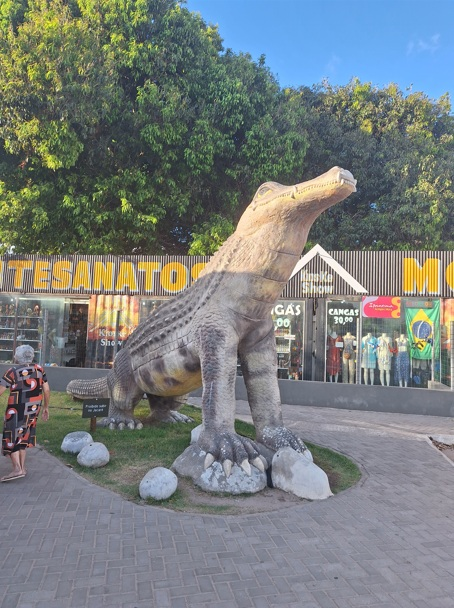Ao som do saxofone de Jurandy, o "Boléro" ganha uma nova dimensão, com uma interpretação intimista e cativante, que leva os presentes a uma viagem musical emocionante. A performance acontece ao pôr do sol, um espetáculo à parte, quando o céu se colore de tons quentes, criando um ambiente perfeito para vivenciar essa obra-prima da música clássica.
A apresentação de Jurandy do Sax no cenário deslumbrante da Praia do Jacaré, à beira do Rio Paraíba, agrega ainda mais encantamento ao "Boléro". O som do saxofone ecoa pelas águas calmas do rio, enquanto o sol se põe lentamente no horizonte, criando uma atmosfera de pura magia e emoção. Os visitantes, de diversas partes do mundo, se reúnem para apreciar essa performance única, onde música, natureza e cultura se encontram.
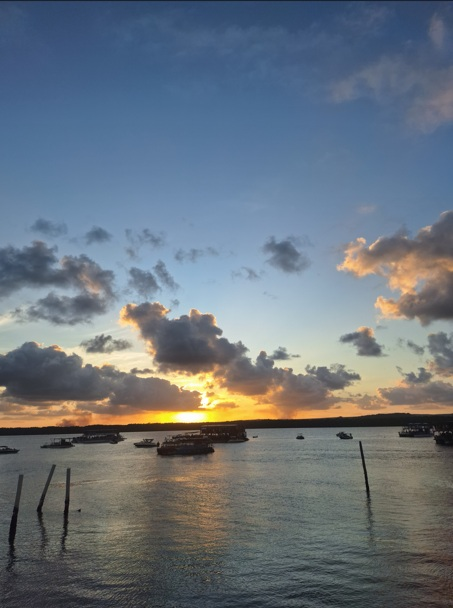Maceió, capital do Estado de Alagoas, tem um jeitinho de cidade do interior e ritmo menos acelerado do que outras capitais brasileiras, e esse é um de seus grandes charmes. Ainda que seja relativamente pequena, os turistas que a visitam contam com restaurantes de qualidade, bons hotéis, além de ótimas praias e diversidade de passeios.
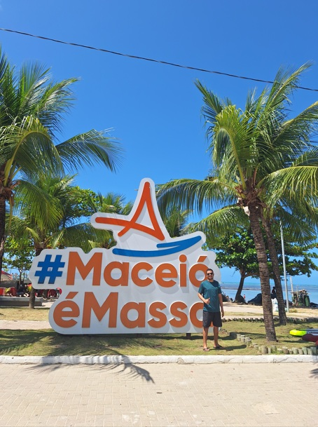O Farol Próximo ao Marco dos Corais, localizado em Maceió, Alagoas, é um dos pontos turísticos mais emblemáticos da cidade, oferecendo uma vista panorâmica deslumbrante do mar cristalino e da costa alagoana. O farol, embora não seja um dos mais antigos ou grandes do Brasil, tem grande importância histórica e cultural para a região.
Erguido como um ponto de referência para os navegantes, o farol é símbolo de segurança e orientação para quem transita pelas águas de Alagoas. Sua localização estratégica, próxima ao Marco dos Corais, torna-o ainda mais relevante, pois esse marco é uma importante formação natural que remete à preservação dos recifes de corais e à proteção ambiental da região.
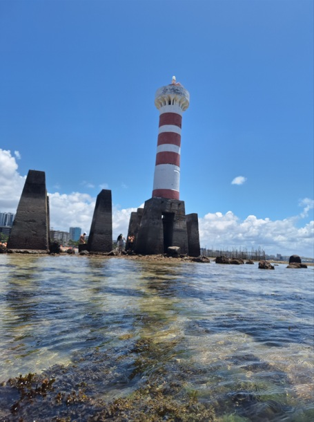Visitar o farol é mais do que apenas um passeio turístico; é uma verdadeira imersão na natureza exuberante de Alagoas. Muitos turistas aproveitam para fazer passeios de barco, mergulhos e caminhadas pela região. O ambiente é perfeito para quem deseja fugir do agito das grandes cidades e aproveitar momentos de tranquilidade, com a beleza do mar e a serenidade do local.
A Praia de Ponta Verde é uma das mais famosas e visitadas de Maceió, localizada no bairro de Pajuçara, em pleno coração da capital alagoana. Conhecida pela sua beleza natural, águas claras e mornas, e infraestrutura de qualidade, a praia é um dos principais cartões-postais de Maceió e um local perfeito para relaxar e aproveitar o sol e o mar.
A Praia de Ponta Verde é famosa por sua vasta faixa de areia dourada, banhada por águas cristalinas e tranquilas. Seu mar, com tons de verde e azul, convida os visitantes para um mergulho relaxante, sendo ideal para famílias, casais e quem busca um ambiente de paz e beleza.
Um dos grandes destaques da praia são as palm trees (palmeiras) que se estendem ao longo da orla, criando uma paisagem tropical deslumbrante. Além disso, a área é rodeada por diversas opções de restaurantes, bares e quiosques, onde os turistas podem degustar pratos típicos da culinária alagoana, como peixes frescos, frutos do mar e a famosa tapioca.
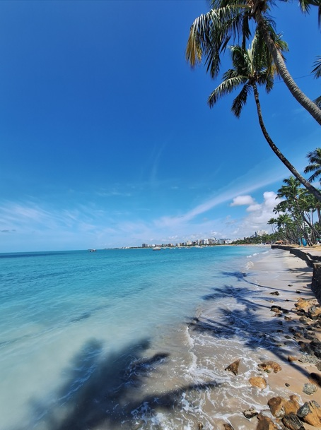O Patronum Café, localizado em Maceió/AL, é um charmoso e aconchegante café que se destaca por seu ambiente acolhedor e sua proposta de oferecer uma experiência única aos amantes do bom café. O local é perfeito para quem busca um espaço tranquilo para relaxar, trabalhar ou socializar, enquanto desfruta de bebidas de alta qualidade e um cardápio recheado de opções deliciosas.
Com um atendimento atencioso e um menu diversificado, o Patronum Café oferece uma seleção de cafés especiais, além de opções de lanches, doces e sobremesas, tudo preparado com ingredientes frescos e de qualidade. O ambiente é inspirado em uma atmosfera descontraída e moderna, ideal para quem quer aproveitar um bom café em um ambiente agradável.
Seja para um café da manhã, uma pausa no meio da tarde ou até mesmo para um encontro com amigos, o Patronum Café é uma excelente escolha para quem visita Maceió e deseja explorar o melhor da cultura cafeeira em um ambiente sofisticado e acolhedor.
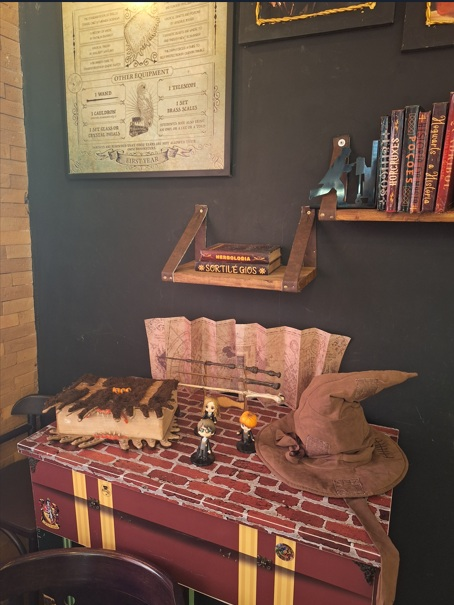 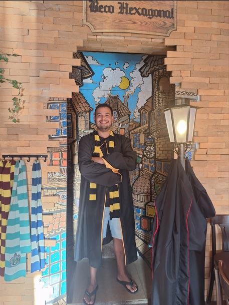Aracaju é a capital do estado de Sergipe, na costa nordeste do Brasil. É conhecida pelas praias, incluindo a Praia de Atalaia, ao centro. Junto à praia, o Oceanário de Aracaju, em forma de tartaruga, possui arraias, tubarões, enguias e tartarugas marinhas, além de exposições práticas. O passeio na marginal, a Passarela do Caranguejo, está repleta de restaurantes de peixe e marisco e é marcada por uma enorme escultura de um caranguejo.
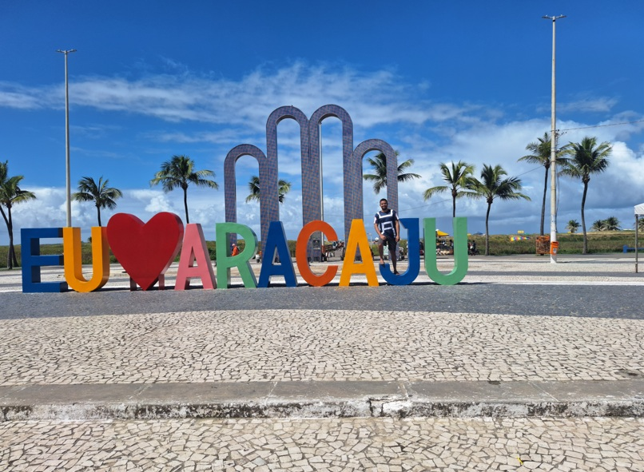A Estátua de Caranguejo é um dos principais símbolos turísticos de Aracaju, capital do estado de Sergipe. Localizada na Orla de Atalaia, a escultura é um tributo à rica cultura local e à importância do caranguejo na gastronomia e tradição sergipana.
A Estátua de Caranguejo foi inaugurada com o intuito de celebrar o caranguejo, um dos frutos do mar mais populares da região e protagonista de pratos típicos sergipanos, como a famosa caranguejada. A escultura reflete a forte conexão da cidade com a pesca e com a culinária à base de frutos do mar, sendo uma verdadeira homenagem à identidade cultural de Aracaju.
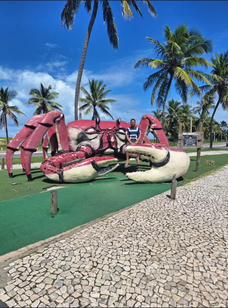Com um design imponente e realista, a Estátua de Caranguejo chama a atenção dos visitantes. A obra é feita em metal e tem grande destaque na orla de Atalaia, uma das áreas mais visitadas da cidade. A escultura de caranguejo, além de seu valor cultural, é também um ponto de atração para turistas e fotógrafos, que aproveitam o cenário para registrar a beleza da escultura e da vista ao redor.
A localização da estátua na Orla de Atalaia permite que os visitantes aproveitem uma das mais belas áreas de lazer da cidade, com opções para caminhadas, passeios de bicicleta, e acesso a diversos restaurantes e quiosques que servem pratos típicos da culinária local, com destaque para o caranguejo. Além disso, a orla é famosa por suas praias, pontos para esportes aquáticos e o ambiente relaxante, tornando a Estátua de Caranguejo uma parada obrigatória para quem visita Aracaju.
O Largo e Museu da Gente Sergipana é um importante centro cultural localizado no coração de Aracaju, Sergipe. O museu, inaugurado em 2014, foi projetado para celebrar a história, as tradições e a cultura do povo sergipano, oferecendo uma experiência imersiva e educativa para os visitantes.
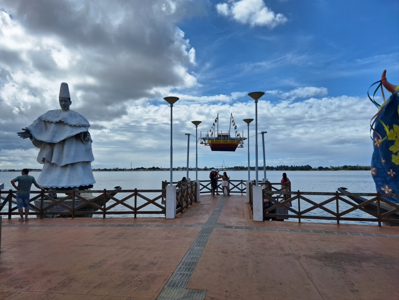O Largo da Gente Sergipana é uma área ao ar livre que serve como o espaço de entrada para o museu. Com um ambiente acolhedor, é um local perfeito para passeios tranquilos, apresentações culturais e eventos ao ar livre. O largo oferece uma bela vista e é rodeado por uma arquitetura que reflete a identidade local, criando um cenário vibrante para quem deseja aprender mais sobre as tradições e a cultura de Sergipe.
O Museu da Gente Sergipana é um espaço interativo e moderno que conta a história do estado de Sergipe, através de exposições que abordam desde a formação histórica e cultural até as tradições, lendas e músicas do povo sergipano. O museu utiliza tecnologia de ponta, com recursos audiovisuais, instalações interativas e peças do acervo que retratam o modo de vida e as influências que moldaram a cultura local.
Além de ser um ponto de aprendizagem, o museu também oferece uma experiência sensorial, convidando o público a explorar a história de forma envolvente e dinâmica
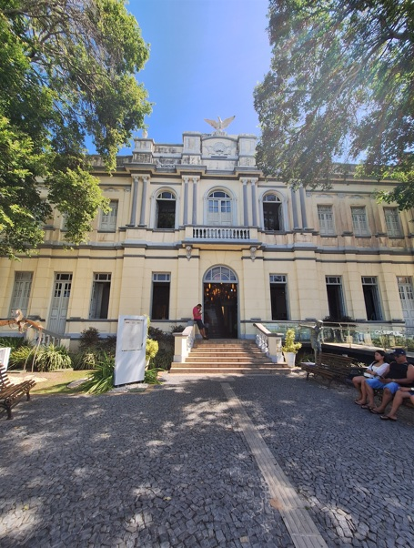